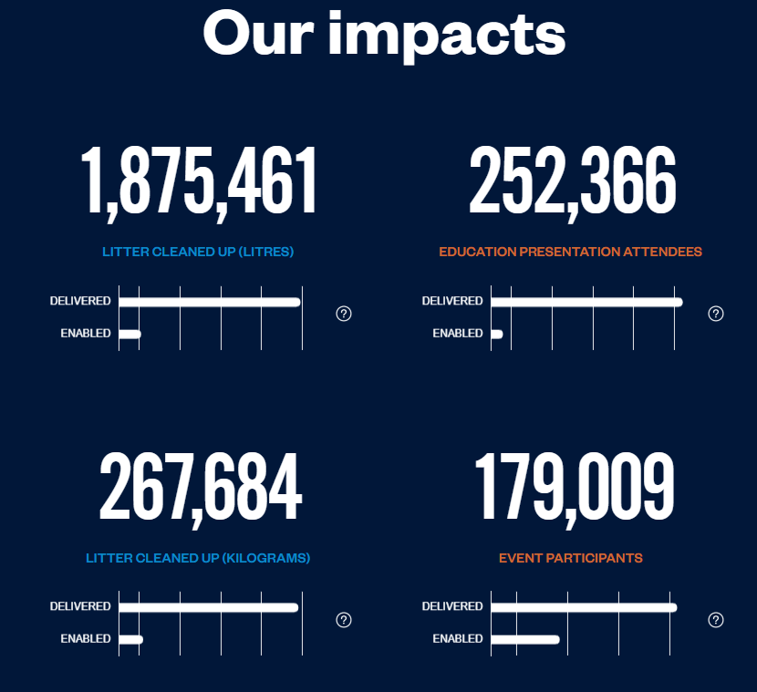
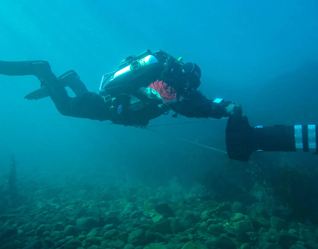
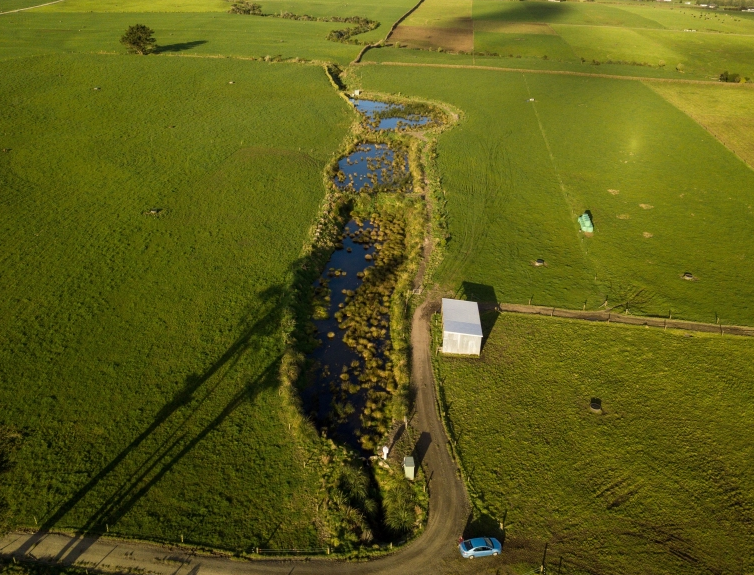

Ready to take action? Discover local groups and organisations working to protect our coastlines.

A well-known New Zealand marine conservation charity operates the Litter Intelligence Project,
New Zealand's most comprehensive marine litter monitoring program,
which uses citizen science to involve volunteers in collecting beach litter data.See more →
Ghost Diving New Zealand is a group of volunteer scuba divers, free divers, and fishing enthusiasts who specialise in removing lost fishing gear and marine rubbish from the ocean floor.See more →


NIWA (National Institute of Water and Atmospheric Research) monitors New Zealand's coastal and ocean environments, including water quality and marine health. See more →